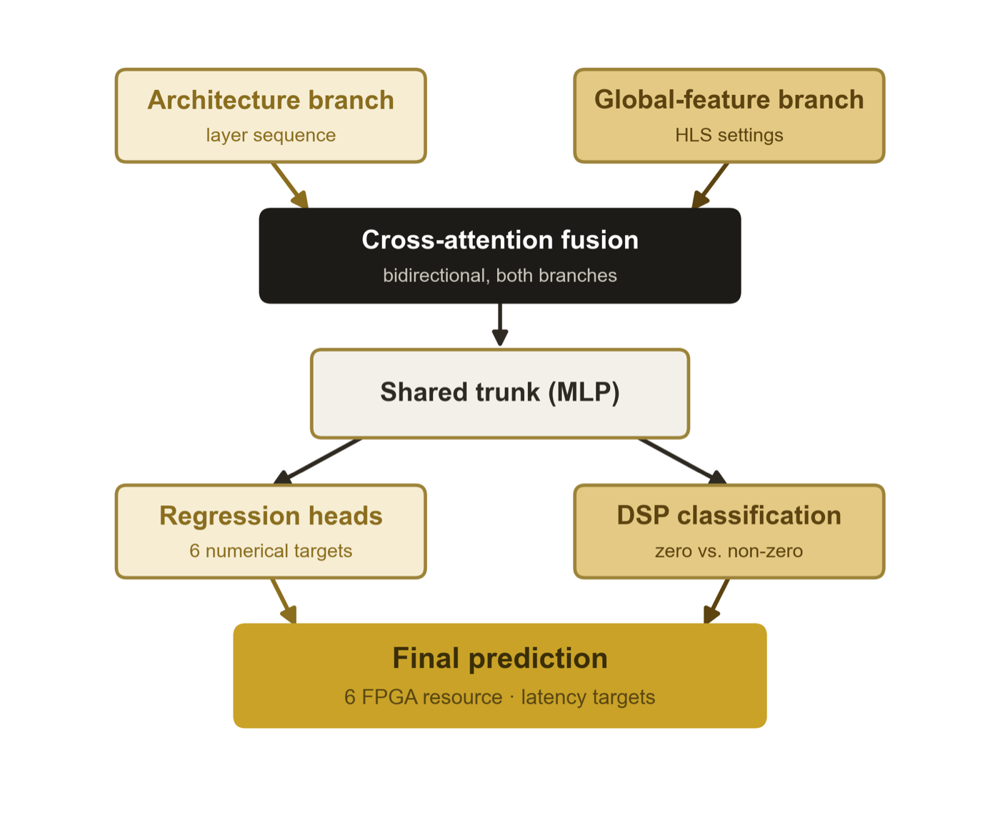
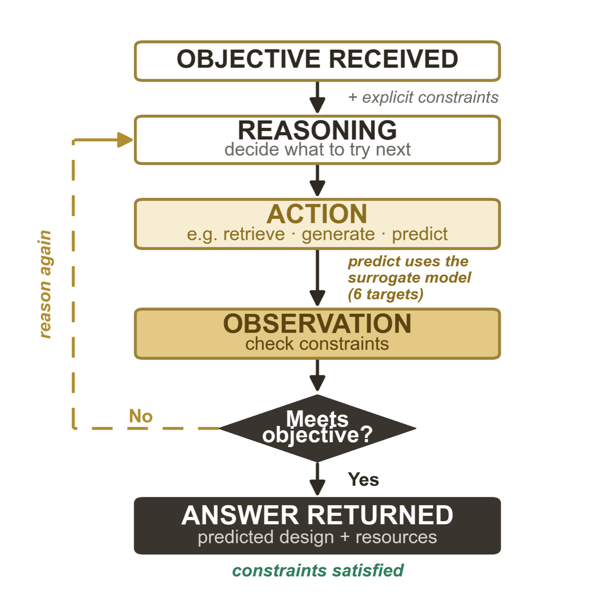

Case study · Undergraduate thesis · In progress
Conversational FPGA Design-Space Exploration
A ReAct-based LLM agent coupled with a Transformer surrogate model that predicts FPGA resources and latency, so designs can be explored in seconds instead of waiting on hardware synthesis for every candidate.
Values tagged prelim. come from ongoing thesis work and may change.
The problem
One AI model can be mapped onto an FPGA in thousands of ways. High-Level Synthesis (HLS) reports the resources and latency of each configuration, but every run takes minutes to hours, so testing every option is impractical.
The data
The public wa-hls4ml benchmark pairs each neural-network design with its HLS report. I cleaned it down to — designs and — prediction targets: BRAM, DSP, FF, LUT, cycles and initiation interval.


Results so far
- Mean R² of — on unseen designs, beating published baselines on BRAM, DSP, FF and LUT.
- Constraint satisfaction of — for Conv1D/Conv2D and — for Dense designs.
- Performance still depends on the architecture type, which is what I am working on now.
What I did
- Data cleaning and the train/validation/test pipeline in Python.
- Designed and trained the surrogate (AdamW, 60 epochs).
- Built the agent and its tools, plus a benchmark to evaluate it.
- Presented the work at the Purdue Summer Undergraduate Research Symposium (July 2026).
Next steps
- Confirm the agent's candidates with real HLS runs.
- Expand the benchmark and improve candidate generation for Dense designs.
- Compare exploration time against a conventional HLS-based search.